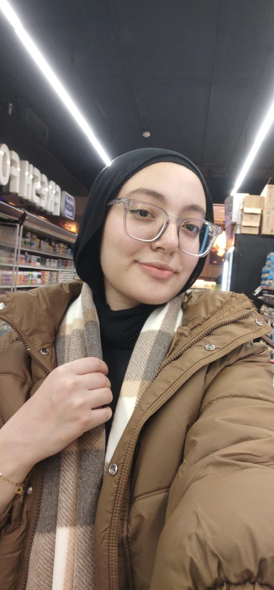

WATT ZILLA
POWER ANALYZER SYSTEM
POWER ANALYZER SYSTEM
Welcome! I am the WattZilla AI Assistant. How can I help you analyze power today?
System Architecture & AI
core architecture - AI - integration
Hardware Integration
Specialized in sensor integration - and hardware components.
Software & UI
C++ FFT sampling - core algorithms - and user interface design.
Testing & Calibration
Ensuring measurement accuracy - safety - and system reliability.

PCB Layout
Designing clean - robust and optimized printed circuit boards.
PCB Layout
Designing clean - robust and optimized printed circuit boards.
PCB Layout
Designing clean - robust and optimized printed circuit boards.
WattZilla is an advanced, custom-built Single-Phase Power Quality Analyzer. In modern electrical grids, non-linear loads (like LED drivers and switching power supplies) cause severe harmonic distortions. WattZilla is designed to monitor, analyze, and report these power quality metrics in real-time. By integrating a dedicated AI assistant (WattZilla AI), the system not only measures data but also helps engineers interpret complex electrical phenomena, bridging the gap between raw data and actionable engineering insights.